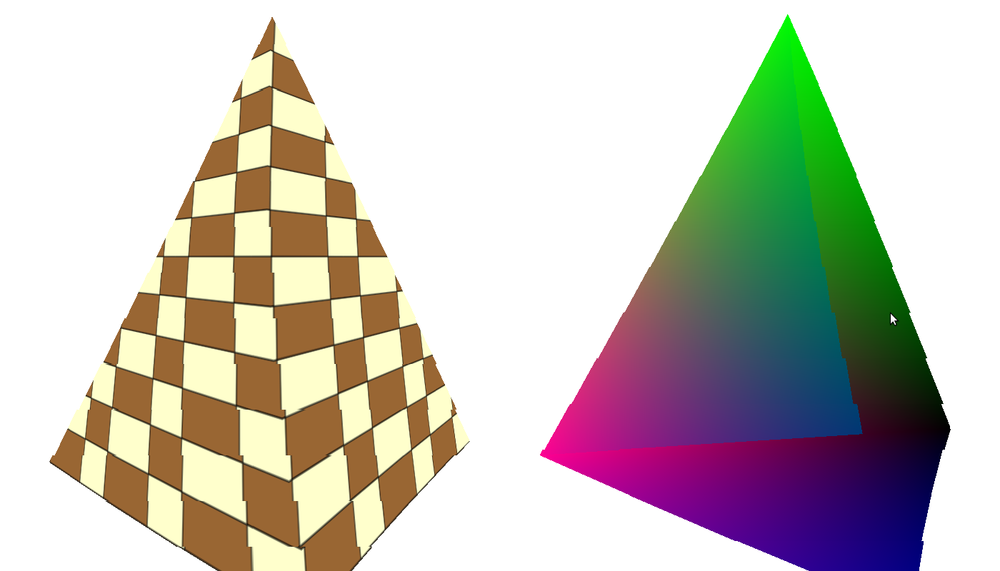

Урок 16 - Основы наложения текстур
Наложение текстур означает использование любого вида изображений для одной или нескольких поверхностей 3D модели. Изображение (или текстура) может быть любым, но часто это шаблон кирпича, листьев, земли и т.д., которые добавляют реализма сцене. Для примера следующее изображение:

Для наложения текстур необходимо сделать 3 вещи: загрузить текстуру в OpenGL, предоставить координаты текстуры вместе с вершинами (для наложения текстуры согласно с ними), и для получения цвета пикселя совершить некоторые операции. Так как треугольники масштабируют, вращают, перемещают и, наконец, проецируют, то они могут иметь множество различных видов в зависимости от их ориентации относительно камеры. Все что должен сделать GPU, это сопоставить текстуру с вершинами треугольника так, что бы это выглядело реалистично (если текстура "поплывет" по треугольнику, то эффект потеряется). Для этого программист должен поставлять набор координат, известных как "координаты текстуры" для каждой вершины. Когда GPU растеризирует треугольник, то он интерполирует координаты текстуры по поверхности треугольника, и в фрагментном шейдере эти координаты соотносятся с текстурой. Это действие называется "выборкой", и результат выбора - это тексел (пиксель в текстуре). Тексел часто хранит часто хранит цвет, который будет использоваться в отрисовке соответствующего пикселя на экране. В этом уроке мы увидим, что тексел может хранить различные типы данных, которые могут быть использованы для множества эффектов.
OpenGL предоставляет несколько типов текстур, таких как 1D, 2D, 3D и т.д., которые могут быть использованы в различных ситуациях. У 2D текстуры есть ширина и высота, которые указываются любым положительным целым числом. Умножив ширину на высоту получим количество текселей в текстуре. -Так вы указываете координаты текселя для вершины? -Нет, не совсем. Их будет слишком много, и если потребуется изменить текстуру на другую, имеющую отличные размеры, тогда придется перестроить все вершины. Идея в том, что бы была возможность менять текстуру, не изменяя ее координат. Поэтому координаты текстуры указываются в нормированном отрезке [0,1]. Это значит, что координаты текстур обычно дроби, и умножив эту дробь на ширину / высоту мы получим координаты текселя. Например, если координаты [0.5,0.1], и высота текстуры 320, а ширина 240, то координаты текселя (160,20) (0.5 * 320 = 160 и 0.1 * 200 = 20).
Обычно для текстур используют U и V оси, где U соответствует X и V - Y. OpenGL рассматривает значения UV осей слева направо для U оси снизу вверх для V. Посмотрим на следующее изображение:

Это изображение показывает пространство текстуры, и как вы можете заметить, начало координат в левом нижнем углу. U возрастает направо, а V - вверх. Теперь посмотрим на треугольник, чьи координаты указаны на изображении:

Теперь предположим, что мы хотим использовать эту текстуру и эти координаты; в данном случае мы получим рисунок с домиком в положении выше. Пусть треугольник прошел через различные преобразования, и когда пришло время для его растеризации, он выглядит так:

Как вы видите, координаты текстуры "приклеены" к вершине, они центральные атрибуты и не изменяются во время преобразований. Во время интерполяции координаты текстур, в большинстве пикселей, получают такие же координаты текстур как и на оригинальном изображении (потому, что их положение не изменилось относительно вершин), и не смотря на то, что треугольник повернут, координаты его текстуры не изменились. Это значит, что текстура полностью следует за треугольником. Заметим, что существуют техники для контролирования перемещения текстуры по поверхности треугольника в требуемом направлении, но сейчас наши координаты останутся без изменений.
Другой важный момент в наложении текстур - это 'фильтрация'. Мы уже говорили о том как получается тексел. Позиция текселя всегда задается в указанном промежутке, но что произойдет, если наши координаты текстуры (запомните - они должны быть в отрезке от 0 до 1) приведут нас к текселю в (152.34,745.14)? Обычно отвечают, что они округлятся до (152,745). Да, это будет работать, и даже даст адекватный результат, но в некоторых случаях будет выглядеть не очень хорошо. Лучше взять 2 на 2 текселя ( (152,745), (153,745), (152,744) и (153,744) ) и совершить некую линейную интерполяцию между их цветами. Эта интерполяция должна сохранить относительное расстояние между (152.34,745.14) и каждым текселем. Чем ближе координата к текселю, тем большее влияние он получит, и наоборот, чем он дальше, тем влияние будет меньше. Это гораздо лучше чем оригинальный подход.
Метод, который выбирает итоговый тексел так же известен как 'фильтрация'. Простейший подход к округлению координат текстуры известен как 'ближайшая фильтрация', а более сложный способ - 'линейная фильтрация'. Другое название для ближайшей фильтрации - 'точечная фильтрация'. OpenGL предоставляет несколько типов, и вас есть возможность выбирать. Обычно фильтр, который дает лучший результат, требует больших вычислений от GPU и может повлиять на частоту кадров. Выбор фильтра зависит от качества требуемого результата а так же от способностей целевой платформы.
Теперь, когда мы поняли принцип координат текстуры, пришло время рассмотреть как же реализовано наложение текстур в OpenGL. Текстурирование в OpenGL означает взаимодействие с 4-мя сложно запутанными понятиями: объект текстуры, модуль текстур, сэмплер объекта и uniform-сэмплер в шейдере.
Объект текстуры хранит данные о самом изображении текстуры, иначе говоря, тексели. Текстуры могут быть нескольких типов (1D, 2D и т.д.) с различными размерами, а так же формат данных может различаться (RGB, RGBA и т.д). OpenGL предлагает несколько способов для указания точки начала данных в памяти, типов текстур и загрузки данных в GPU. Существует множество параметров для большего контроля такие как вид фильтра и т.д. Очень схож с вершинным буфером объект текстуры, который то же ассоциируется с указателем. После создания указателя и загрузки данных и параметров вы запросто можете назначать другие указатели на лету, просто передав в состояние OpenGL новую текстуру. Вам больше не требуется загружать данные вновь. С этого момента проверка загружены ли данные в GPU до начала рендера - работа для драйвера OpenGL.
Объект текстуры не обязательно перейдет прямо в шейдер (где фактически находится сэмплер). Вместо этого он перейдет в 'модуль текстур', индексы которого передаются в шейдер. Таким образом, шейдер получает текстуру через модуль текстур. Обычно доступно сразу несколько модулей текстур, количество которых зависит от вашей видеокарты. Для того, что бы привязать объект текстуры A к модулю 0 необходимо сначала активировать модуль 0, а затем и привязать объект текстуры A. Вы можете активировать модуль текстур 1 и привязать другой (или даже тот же самый) объект текстуры к нему. Модуль 0 останется привязан к текстуре A.
Возникает небольшая сложность с тем фактом, что каждый модуль текстур на самом деле имеет место для нескольких текстур одновременно из-за того, что текстуры бывают нескольких типов. Это называется 'позицией' объекта текстур. Когда мы привязываем объект к модулю, то мы указываем его позицию (1D, 2D и т.д.). Поэтому вы можете иметь привязанный объект A к позиции 1D, а объект B к 2D одного итого же модуля.
Операция выбора (обычно) находится внутри фрагментного шейдера, и для этого существует специальная функция. Функция выбора должна знать модуль текстуры для доступа, поскольку вы можете выбирать из нескольких модулей текстур в фрагментном шейдере. Для этого используется специальная uniform-переменная, согласно позиции текстуры: 'sampler1D', 'sampler2D', 'sampler3D', 'samplerCube' и другие. Вы можете создать столько uniform-переменных, сколько захотите и назначить значение модуля текстур для каждой напрямую из приложения. Каждый раз, когда вы вызываете функцию выбора на сэмплер uniform-переменной, соответствующий модуль текстур (а вместе с ним и объект текстур) будет использован.
И последнее понятие - это сэмплер объекта. Не путайте его с сэмплером uniform-переменной! Это разные понятия. Идея в том, что объект текстуры хранит и данные текстуры и параметры, которые настраивают операцию выбора. Эти параметры часть состояния сэмплера. Хотя, вы также можете создать сэмплер объекта, настроить его и привязать к модулю текстуры. Когда вы это сделаете, сэмплер объекта перезапишет все другие состояния сэмплера, определенные в объекте текстур. Не волнуйтесь, пока что мы не будем использовать сэмплеры объектов, но все же лучше знать об их существовании.
Следующая диаграмма подводит итог ко всему, что мы изучили относительно связи между понятиями текстур:

Прямиком к коду!
OpenGL знает как получить данные текстуры в различных форматах из памяти, но не предоставляет никаких способов для загрузки текстур в память из файлов изображений таких как PNG или JPG. Нам потребуется дополнительная внешняя библиотека что бы сделать это. Их существует большое множество, но мы будем использовать ImageMagick, свободная библиотека, поддерживающая множество типов изображений, и кроме того, она кроссплатформеная. Если вы используете Ubuntu, вы можете легко установить через 'apt-get install libmagick++-dev'. Если у вам другой Linux дистрибутив, используйте свой менеджер пакетов или скачайте исходники и соберите библиотеку самостоятельно.
Большинство указателей на текстуры инкапсулированы в следующем классе:
texture.h:27
class Texture
{
public:
Texture(GLenum TextureTarget, const std::string& FileName);
bool Load();
void Bind(GLenum TextureUnit);
};
Во время создания объекта текстуры вам необходимо указать позицию (мы используем GL_TEXTURE_2D) и имя файла. После вы можете вызвать функцию Load(). Она может вернуть код ошибки если, например, файл не существует, или если ImageMagick получит другие виды ошибок. encountered any other error. Если вы хотите использовать конкретный экземпляр текстуры, вы должны привязать его к одному из текстурных модулей.
texture.cpp:31
try {
m_pImage = new Magick::Image(m_fileName);
m_pImage->write(&m_blob, "RGBA");
}
catch (Magick::Error& Error) {
std::cout << "Error loading texture '" << m_fileName << "': " << Error.what() << std::endl;
return false;
}
Вот так мы используем ImageMagick для загрузки из файла и подготовки памяти для загрузки в OpenGL. Мы начинаем с инициализации свойства класса типа Magic::Image используя имя файла текстуры. Этот вызов загружает текстуру в память, которая задана private и не может быть напрямую использована OpenGL. Затем мы записываем изображение в объект Magick::Blob используя формат RGBA (красный, зеленый, синий и альфа канал). BLOB (большой бинарный объект) - это полезный механизм для хранения зашифрованного изображения в память так, что оно может быть использовано сторонними программами. Если будут какие-либо ошибки, то будет брошено исключение, поэтому мы должны быть готовы для него.
texture.cpp:40
glGenTextures(1, &m_textureObj);
Эта функция OpenGL очень похожа на glGenBuffers(), с которой мы уже хорошо знакомы. Она генерирует указанное число объектов текстур и помещает их в указатель на массив GLuint (второй параметр). В нашем случае нам потребуется только 1 объект.
texture.cpp:41
glBindTexture(m_textureTarget, m_textureObj);
Мы собираемся сделать несколько вызовов, связанных с текстурой, и в похожей на буфер вершин манере, OpenGL должен знать, с каким объектом текстур работать. Эта цель функции glBindTexture(). Она сообщает OpenGL объект текстуры, который относится ко всем вызовам, связанным с текстурами, до тех пор, пока новый объект текстур не будет передан. В дополнении к указателю (второй параметр) мы также указываем позицию текстуры, которая может принимать значения GL_TEXTURE_1D, GL_TEXTURE_2D и т.д. Вполне можно использовать различные типы объектов текстур для каждой из позиций одновременно. В нашем случае позиция - это часть конструктора (сейчас мы используем GL_TEXTURE_2D).
texture.cpp:42
glTexImage2D(m_textureTarget, 0, GL_RGBA, m_pImage->columns(),m_pImage->rows(), 0, GL_RGBA, GL_UNSIGNED_BYTE, m_blob.data());
Гораздо более сложная функция для загрузки главной части объекта текстуры, что по сути, сами данные текстуры. Существует несколько функций glTexImage*, доступных для каждой позиции текстуры. Позиция всегда первый параметр. Второй - это LOD или уровень детализации (Level-Of-Detail). Объект текстуры может хранить одну и ту же текстуру в различном разрешении, понятие, известное как mip-отображение (mip - "много в одном"). Каждое mip-отображение имеет различный коэффициент LOD, 0 для максимального качества, и с увеличением качество падает. Пока что мы имеем только 1 mip-отображение, поэтому мы передаем 0.
Следующий параметр - внутренний формат, в котором OpenGL хранит текстуру. Для примера, вы можете передать текстуру со всеми 4 каналами (красный, зеленый, голубой и альфа), но если вы укажете GL_RED, то вы получите текстуру только с красным каналом, что выглядит довольно … красно (попробуйте это!). Мы используем GL_RGBA для получения всех цветов текстуры. Следующие 2 параметра ширина и высота текстуры в текселях. ImageMagick сохраняет эту информацию для нас когда загружает изображение, и мы получаем эти данные через функции Image::columns()/rows(). Пятый параметр - рамка, которую мы оставим равной 0.
Последние 3 параметра указывают источник входящих данных текстуры. Это формат, тип и адрес в памяти. Формат указывает количество каналов, которые должны соответствовать значению из BLOB. Тип определяет вид данных относительно каждого канала. OpenGL поддерживает множество типов данных, но в ImageMagick BLOB имеет только 1 байт на канал, поэтому мы используем GL_UNSIGNED_BYTE. Наконец, мы указываем адрес данных, которые извлекаются из BLOB'а через функцию Blob::data().
texture.cpp:43
glTexParameterf(m_textureTarget, GL_TEXTURE_MIN_FILTER, GL_LINEAR);
glTexParameterf(m_textureTarget, GL_TEXTURE_MAG_FILTER, GL_LINEAR);
Широкая функция glTexParameterf управляет многими аспектами операции выборки текстур. Эти аспекты - часть состояния сэмплера текстуры. Здесь мы указываем фильтры, которые будут использованы для увеличения и минимализации. Каждая текстура имеет заданные ширину и высоту, но очень редко они совпадают с пропорциями треугольника. В большинстве случаев треугольник больше или меньше чем текстура. В этом случае тип фильтра определяет как именно увеличить или уменьшить текстуру для совпадения пропорций. Если треугольник, проходящий растеризацию, больше чем текстура (например очень близок к камере), то у нас некоторые пиксели будут использовать один текстел. А если меньше (очень далеко от камеры) сразу несколько текселей используются для одного пикселя. Мы выбрали фильтр линейной интерполяции для обоих случаев. Как мы уже видели ранее, линейная интерполяция дает хороший результат путем смешивания цвета 2x2 текселя основываясь на текущей позиции текселя (вычисляется путем масштабирования координат текстуры ее размерами).
texture.cpp:49
void Texture::Bind(GLenum TextureUnit)
{
glActiveTexture(TextureUnit);
glBindTexture(m_textureTarget, m_textureObj);
}
Так как наше 3D приложение постоянно разрастается, мы возможно захотим использовать множество различных текстур во множестве вызовов отрисовки в функции рендера. Прежде чем делать любой вызов мы должны привязать объект текстур, а так же разрешить использование конкретного модуля текстур, что бы она была доступна в фрагментном шейдере. Эта функция принимает модуль текстуры как параметр типа enum (GL_TEXTURE0, GL_TEXTURE1 и т.д.). Тем самым он станет активным через glActiveTexture() и затем привязываем объект текстур к модулю. Связь будет до тех пор, пока для этого модуля не будет вызвана Texture::Bind() для другой текстуры.
main.cpp:60
layout (location = 0) in vec3 Position;
layout (location = 1) in vec2 TexCoord;
uniform mat4 gWVP;
out vec2 TexCoord0;
void main()
{
gl_Position = gWVP * vec4(Position, 1.0);
TexCoord0 = TexCoord;
};
Это обновленный вершинный шейдер. Мы добавили еще один входной параметр, названный TexCoord, являющийся двумерным вектором. Вместо вывода цвета шейдер теперь передает координаты текстуры, причем без изменений. Растеризатор интерполирует координаты текстуры по поверхности треугольника и каждый фрагментный шейдер будет вызван со своим значением координат текстуры.
main.cpp:76
in vec2 TexCoord0;
out vec4 FragColor;
uniform sampler2D gSampler;
void main()
{
FragColor = texture2D(gSampler, TexCoord0.st);
};
А это новый фрагментный шейдер. У него входящая переменная, названная TexCoord0, которая содержит интерполированые координаты текстуры, полученные из вершинного шейдера. Так же у нас новая uniform-переменная, названная gSampler, типа sampler2D. Это пример сэмплера uniform-переменной. Приложению требуется задать значение модуля текстуры в эту переменную что бы фрагментный шейдер имел доступ к текстуре. Функция main делает только одну вещь - она вызывает внутреннюю функцию texture2D что бы использовать текстуру. Первый параметр это сэмплер uniform-переменной и второй - координаты текстуры. Возращенное значение - это сэмплер текселя (который, в нашем случае, содержит только цвет), который уже прошел фильтрацию. Это итоговый цвет пикселя в данном уроке. В последующих мы уроках мы увидим, что свет просто влияет на цвет полагаясь на параметры света.
main.cpp:154
Vertex Vertices[4] = {
Vertex(Vector3f(-1.0f, -1.0f, 0.5773f), Vector2f(0.0f, 0.0f)),
Vertex(Vector3f(0.0f, -1.0f, -1.15475), Vector2f(0.5f, 0.0f)),
Vertex(Vector3f(1.0f, -1.0f, 0.5773f), Vector2f(1.0f, 0.0f)),
Vertex(Vector3f(0.0f, 1.0f, 0.0f), Vector2f(0.5f, 1.0f))};
До этого момента наш вершинный буфер состоял из последовательного списка экземпляров структуры Vector3f, которая содержала только позицию. Теперь у нас есть структура 'Vertex', содержащая так же и координаты текстуры в формате Vector2f.
main.cpp:106
...
glEnableVertexAttribArray(1);
...
glVertexAttribPointer(0, 3, GL_FLOAT, GL_FALSE, sizeof(Vertex), 0);
glVertexAttribPointer(1, 2, GL_FLOAT, GL_FALSE, sizeof(Vertex), (const GLvoid*)12);
...
pTexture->Bind(GL_TEXTURE0);
...
glDisableVertexAttribArray(1);
Цикл рендера достаточно изменился. Мы начинаем с разрешения использования атрибутов вершин 1 для координат текстур в дополнении к атрибуту 0, который уже занят для позиции. Это соответствует их расположению в вершинном шейдере. Затем мы вызываем glVertexAttribPointer для указания позиции координат текстуры в вершинном буфере. Они представлены в виде 2 вещественных числах, что и указано во 2 и 3 параметрах. Обратите внимание на 4 параметр. Это размер структуры вершины, и он указывается и для вектора позиции и вектора координат. Этот параметр еще называют как "расстояние между вершинами" (vertex stride), он говорит OpenGL количество байтов между началом атрибутов одной вершины и началом уже следующей. В нашем случае буфер содержит: pos0, texture coords0, pos1, texture coords1 и т.д. В предыдущих уроках у нас была только позиция, так что мы могли установить 0 или sizeof(Vector3f). Сейчас же мы имеем больше чем один атрибут, поэтому размер обязательно должен быть равен размеру структуры. Последний параметр - смещение в байтах от начала структуры до атрибутов текстуры. Мы преобразовываем в GLvoid* потому, что функция ожидает смещение в таком формате.
Прежде чем вызывать отрисовку мы привязываем текстуру, которую мы хотим использовать, к модулю. У нас только одна текстура, поэтому нам подойдет любой модуль. Нам нужно только удостовериться, что тот же самый модуль отправлен в шейдер (об этом ниже). После вызова отрисовки мы отключим этот атрибут.
main.cpp:268
glFrontFace(GL_CW);
glCullFace(GL_BACK);
glEnable(GL_CULL_FACE);
Эти вызовы OpenGL не обязательны для текстурирования, но я их добавил для того, что бы картинка была лучше (попробуйте их отключить…). Они включают отброс задней поверхности для дополнительной оптимизации, и используется что бы отбраковывать треугольники до затратных процессов растеризации. Обосновывается это тем, что 50% поверхностей объектов скрыты от нас (задняя сторона человека, дома, автомобиля и т.д.). Функция glFrontFace() говорит OpenGL, что вершины в треугольнике подаются в сторону движения часовой стрелки. То есть, если вы смотрите прямо на плоскость треугольника, то вы заметите, что вершины указаны в часовом порядке. glCullFace() сообщает GPU, что бы он отбрасывал обратные стороны треугольника. Это значит, что "внутри" объекта ничего рендериться не будет, только внешняя часть. Наконец, включаем отбрасывание задних сторон (по умолчанию выключено).
main.cpp:277
glUniform1i(gSampler, 0);
Здесь мы устанавливаем индексы модулей текстуры, который мы собираемся использовать внутри сэмплера uniform-переменной в шейдере. 'gSampler' это переменная, значение которой было задано ранее через glGetUniformLocation(). Важно запомнить, что индекс модуля текстуры, который использован здесь, не enum OpenGL'я GL_TEXTURE0 (который имеет другое значение).
main.cpp:279
pTexture = new Texture(GL_TEXTURE_2D, "test.png");
if (!pTexture->Load()) {
return 1;
}
Здесь мы создаем объект Текстуры и загружаем его. 'test.png' добавлен к исходникам этого урока, но ImageMagick должна суметь обработать любой файл, переданный ей.
Домашнее задание: если вы запустите этот урок, то вы увидите, что грани пирамиды не одинаковые (она не правильная). Попробуйте понять почему это происходит, и что надо сделать, что бы это исправить.